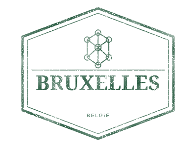

Destination · Bruselas-Capital, Belgium
Brussels
Atomium
- Country code
- BE
- Worn SVG
- 2.09 KB
- Clean SVG
- 1.26 KB


Use it in your project
Install @lucianopignotti/passport-stamps, then use the stamp in your framework or as a plain image.
Angular
import { PassportStampComponent } from '@lucianopignotti/passport-stamps/angular';
// Add PassportStampComponent to imports.
<passport-stamp country="BE" city="Brussels" date="2026-11-07" />React
import { PassportStamp } from '@lucianopignotti/passport-stamps/react';
<PassportStamp country="BE" city="Brussels" date="2026-11-07" />Web Component
<script type="module">
import { definePassportStamp } from '@lucianopignotti/passport-stamps/element';
definePassportStamp();
</script>
<passport-stamp country="BE" city="Brussels" date="2026-11-07"></passport-stamp>HTML
<img src="/stamps/be-brussels.svg" alt="Brussels — Atomium" width="400" height="300">